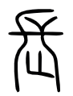

○正義曰：《說文》：「擇，柬選也。」《後漢書·張衡傳》：「衡作《思玄賦》曰：『匪仁里其焉宅兮!』」李賢注：「《論語》『里仁爲美，宅不處仁』，里、宅皆居也。」《困學紀聞》謂《論語》古文本作「宅」。惠氏棟《九經古義》：「《釋名》曰：『宅，擇也，擇吉處而營之。』是宅有擇義。或古文作『宅』，訓爲『擇』，亦通。」馮氏登府《異文攷證》引劉璠《梁典》「署宅歸仁里」，亦作「宅」字。
○注：「里者」至「有知」。 ○正義曰：《爾雅·釋詁》：「里，邑也。」《說文》：「里，居也。」「仁之所居」，「仁」當依皇本作「民」。《文選潘岳閒居賦注》：「民」作「人」，此唐人避諱。「居於仁者之里，是爲美」者，《大戴禮·主言》云：「昔者明主之治民有法，必別地以州之，分屬而治之，然後賢民無所隱，暴民無所伏。使有司日省，如時考之，歲誘賢焉，則賢者親，不肖者懼。」是古有別地居民之法，故居於仁里，即己亦有榮名，是爲美也。「求居而不處仁者之里，不得爲有知」者，此訓「擇」爲「求」也。《荀子·勸學篇》：「故君子居必擇鄉，遊必就士，所以防邪僻而近中正也。」今求居不處仁者之里，是無知人之明，不得爲有知矣。鄭氏此訓與《論語》古文義合。皇疏引沈居士云：「言所居之里，尚以仁地爲美，況擇身所處，而不處仁道，安得智乎？」案：《孟子·公孫丑上》：「孟子曰：『矢人豈不仁於圅[hán]人哉？矢人惟恐不傷人，圅人惟恐傷人。巫匠亦然。故術不可不慎也。孔子曰：「里仁爲美。擇不處仁，焉得知？」夫仁，天之尊爵也，人之安宅也。莫之禦而不仁，是不智也。』」觀孟子所言，是「擇」指行事。沈說蓋本此，於義亦通。
正義曰：《墨子經上》：「久，彌異時也。」《說文》：「，久遠也。」隸變作「長」。《禮記坊記注》：「約，猶窮也。」不仁之人，貧富皆不可久處，故先王制民使有恆産，既富必教之也。「安仁」者，心安於仁也。「利仁」者，知仁爲利而行之也。二者中有所守，則可久處約，長處樂。《表記》：「子曰：『仁有三：與仁同功而異情。與仁同功，其仁未可知也。與仁同過，然後其仁可知也。仁者安仁，知者利仁，畏罪者強仁。』」「安仁」是自然體合，功過皆所不計，此其仁可知。故直許之曰仁者，若利仁、強仁，是與仁同功也，其仁未可知，故利仁但稱爲知也。又《表記》：「子曰：『中心安仁者，天下一人而已矣。』」又曰：「無欲而好仁者，無畏而惡不仁者，天下一人而已矣。」言「無欲而好仁」，則與利仁者異；「無畏而惡不仁」，則與畏罪強仁者異。此惟安仁者能之。《中庸》云：「或安而行之，或利而行之，或勉強而行之，及其成功一也。」彼文以安行爲仁，利行爲知，勉強行爲勇。聖人均要於成功，不以誠僞苛求之也。《大戴禮曾子立事》云：「仁者樂道，智者利道。」義同。
正義曰：「惟」，皇本、宋石經、宋刻《九經》俱作「唯」。凡人用情，多由己愛憎之私，於人之善不善有所不計，故不能好人惡人也。若夫仁者，情得其正，於人之善者好之，人之不善者惡之，好惡咸當於理，斯惟仁者能之也。《禮記大學》云：「《秦誓》曰：『人之有技，媢嫉以惡之；人之彥聖，而違之俾不通。實不能容，以不能保我子孫黎民，亦曰殆哉!』惟仁人放流之，迸諸四夷，不與同中國。此謂惟仁人爲能愛人，能惡人。」與此文相發。《荀子·非十二子》云：「貴賢，仁也，賤不肖，亦仁也。」
○注：「唯仁者，能審人之所好惡。」 ○正義曰：焦氏循《論語補疏》：「仁者好人之所好，惡人之所惡，故爲能好能惡。必先審人之所好所惡，而後人之所好好之，人之所惡惡之，斯爲能好能惡也。」案：注說頗曲，姑依焦說通之。
正義曰：《釋文》：「惡如字，又烏路反。」案：前後章皆言好惡，此亦當讀烏路。《春秋繁露玉英篇》：「難者曰：爲賢者諱皆言之，爲宣、穆諱獨弗言，何也？曰：不成於賢也。其爲善不法，不可取，亦不可棄。棄之則棄善志也，取之則害王法。故不棄亦不載，以意見之而已。苟志於仁，無惡，此之謂也。」又《鹽鐵論·刑德篇》：「故春秋之治獄，論心定罪，志善而違於法者免，志惡而合於法者誅。」亦是此議。《漢石經》無「也」字，與《繁露》同。
○注：「苟誠」至「無惡」。 ○正義曰：《毛詩采苓傳》：「苟，誠也。」皇疏云：「言人若誠能志於仁，則是爲行之勝者，故其餘所行皆善，無惡行也。」
○正義曰：《說文》：「䝿，不賤也。賤，賈少也。」故稱有爵祿者爲貴，無爵祿者爲賤，引申之義也。富貴人所欲，貧賤人所惡，亦是言好惡也。若於不以其道之富貴則不處，不以其道之貧賤則不去，斯惟仁者能之。蓋仁者好惡，有節於內，故於富貴則審處之，於貧賤則安守之。《坊記》所謂「君子辭貴不辭賤，辭富不辭貧」者也。《孟子·告子上》：「孟子曰：『欲貴者，人之同心也。人人有貴於己者，弗思耳。《詩》曰：「既醉以酒，既飽以德。」言飽乎仁義也，所以不願人之膏粱之味也。令聞廣譽施於身，所以不願人之文繡也。』」《荀子·性惡篇》：「仁之所在無貧窮，仁之所亡無富貴。」謝氏墉校注：「此言仁之所在，雖貧窮甘之，仁之所亡，雖富貴去之。」並是此義。《呂覽有度篇》注：「不以其道得之不居。」畢氏沅校云：「案：古讀皆以『不以其道』爲句，此注亦當爾。《論語》『不處』，此作『不居』。《論衡》問孔、刺孟兩篇並同。」案：《後漢·陳蕃傳》、《鹽鐵論·褒賢篇》亦作「不居」，自是齊、古、魯文異。《呂覽注》「居」下無「也」字，高麗本「不去」下亦無「也」字，當以有「也」字爲是。且古讀皆至「得之」爲句，畢校非是。
○注：「不以其道得富貴，則仁者不處。」 ○正義曰：夫子謂「不義而富且貴，於我如浮雲」，孟子謂「非其道則一簞食不可受於人」，皆此意。
○注：「時有」至「去之」。 ○正義曰：「否」者，塞也。「泰」者，通也。君子履道，當得富貴而反貧賤，是不以其道得之，於此當以義命自安，不可違而去之，輒妄冀得富貴也。《大戴禮·曾子制言中》：「故君子無悒悒於貧，無勿勿於賤，無憚憚於不聞，布衣不完，蔬食不飽，蓬戶穴牅，日孜孜於仁。」
君子去仁，惡乎成名？〔注〕孔曰：「惡乎成名者，不得成名爲君子。」 君子無終食之閒違仁，造次必於是，顛沛必於是。」〔注〕馬曰：「造次，急遽。顛沛，偃仆。雖急遽、偃仆不違仁。」正義曰：《表記》云：「子曰：『仁之難成久矣，唯君子能之。』」故此文言仁，皆舉君子也。仁既難成，故鮮能成名。君子知仁是美名，故終不去仁，所以能審處富貴，安守貧賤也。此君子，是「知者利仁」也。「君子無終食之閒違仁」者，邢疏：「言仁不可斯須去身，故君子無食頃違去仁道也。」案：終食之閒，常境也；造次顛沛，變境也。君子處常境，無須臾之閒違仁，故雖值變境，亦能依於仁行之。所以能審處富貴，安守貧賤也。此君子，是「仁者安仁」也。《曾子制言》云：「昔者，舜匹夫也，土地之厚，則得而有之；人徒之衆，則得而使之。舜唯以得之也。是故君子將說富貴，必勉於仁也。昔者，伯夷、叔齊仁者也，死於溝澮之間，其仁成名於天下。夫二子者，居河、濟之間，非有土地之厚，貨粟之富也。言爲文章，行爲表綴於天下。是故君子思仁，晝則忘食，夜則忘寐，日旦就業，夕而自省，以歿其身，亦可謂守業矣。」案：舜是以道得富貴，伯夷、叔齊則不以道得貧賤，而其仁成名於天下，皆所謂「安仁」者也。若君子將說富貴必勉於仁，又晝夜日夕，皆是思仁，此則爲「利仁」也。曾子所言，最足發明此章之旨。
○注：「造次，急遽。顛沛，偃仆。雖急遽、偃仆不違仁。」 ○正義曰：鄭注云：「造次，倉卒也。」「倉促」與「急遽」義同。《廣雅 釋詁》：「𧻕[qì]，𡰾[ cī]，造，猝也。」王氏念孫《疏證》：「𧻕，𡰾，一字也。《說文》：『𧻕，倉卒也。』卒與猝同，𧻕之言造次也。倉卒造次，語之轉。次、趚，古同聲，故《廣雅》𧻕、造二字並訓爲猝。」案：《易夬》九四：「其行次且。」《釋文》「次」項：「本亦作趑。《說文》及鄭作𧻕，同七私反。馬云：『卻行不前也。』」「卻行」與「急遽」相反，文各有因也。《漢書·景十三王傳》：「河間獻王德被服儒術，造次必於儒者。」言「造次」與此文義同。《說文》：「蹎[diān]，跋也。跋，蹎跋也。」《詩·蕩篇》：「顛沛之揭」，毛傳「顛仆沛拔」，「拔」與「跋」同。考之《說文》，「顛」本訓「頂」，「沛」爲水名，皆叚借也。「偃仆」者，《說文》：「偃，僵也。仆，頓也。」皇本及《釋文》本「偃」作「僵」。《說文》：「僵，僨也。」義亦同。
正義曰：「其爲仁矣」，爲仁，即用力於仁也。「矣」者，啓下之辭。王氏引之《經傳釋詞》：「矣，也，一聲之轉。」《三國志·顧歡傳》引「其爲仁也」。「加」者，《呂覽·不苟論、當賞篇》注：「加，施也。」「有能一日用其力於仁」者，申言爲仁之事也。夫子言：「力不足者，中道而廢。」又《表記》：「子曰：『鄉道而行，中道而廢，忘身之老也，不知年數之不足也，俛焉日有孳孳，斃而後已。』」並言爲仁實用其力。惟力已盡，身已斃，而學道或未至，方是「中道而廢。」其廢也，由於年數不足，有不得不廢者也。如是而後謂之力不足，是誠不足也。若此身未廢，而遽以力不足自諉，是即夫子之所謂畫矣。夫仁，人心也。人即體質素弱，而自存其心志之所至，氣亦至焉。豈患力之不足？故曰：「我欲仁，斯仁至矣」，「一日克己復禮，天下歸仁焉」。「一日」者，期之至近而速者也。「蓋有之」者，言此用力於仁，人必有耳，但我未之得見。「蓋」是語辭，不是疑辭。《漢石經》「我未見好仁」下無「者」字。皇本「用其力於仁」下有「者」字，又「力不足者」下有「也」字，「蓋有之矣」，「矣」作「乎」。
○注：「難復加也。」 ○正義曰：《說文》：「尚，曾也。」「曾」與「增」同，故注訓「加」。皇疏引李充曰：「所好惟仁，無物以尚之也。」
○注：「言惡」至「爲優」。 ○正義曰：注以經言「好仁者，惡不仁者」，是就兩人說之。「惡不仁者」不如「好仁者」爲優。意以「惡不仁者」或是利仁、強仁，若「好仁者」，則是安仁也。
正義曰：皇本「人」作「民」。「各於其黨」者，皇疏引殷仲堪曰：「言人之過失，各由於性類之不同。直者以改邪爲義，失在於寡恕；仁者以惻隱爲誠，過在於容非」是也。《表記》：「子曰：『仁之難成久矣，人人失其所好，故仁者之過易辭也。』」注：「辭猶解說也。仁者恭儉，雖有過不甚矣。」明言仁道難成，仁者雖有過，不失其爲仁也。又子曰：「仁有三，與仁同功而異情。與仁同功，其仁未可知也。與仁同過，然後其仁可知也。仁者安仁，知者利仁，畏罪者強仁。」注云：「三謂安仁也，利仁也，強仁也。利仁，強仁，功雖與安仁者同，本情則異。功者，人所貪也。過者，人所辟也。在過之中，非其本情者，或有悔者焉。」案：《表記》此文，最足發明此章之義。《漢書·外戚傳》：「燕王上書言子路喪姊，期而不除。」《後漢書·吳佑傳》言：「嗇夫孫性私賦民錢，市衣進父」《南史·張裕傳》言：「張岱母年八十，籍注未滿，便去官還養。」三傳皆引此文美之，惟吳祐傳作「知人」，「人」與「仁」通用字。
○注：「黨黨」至「仁矣」。 ○正義曰：《禮記·仲尼燕居注》：「黨，類也。」亦常訓。焦氏循《補疏》申此注云：「各於其黨，即是觀過之法，此爲莅民者示也。」皇侃云：「猶如耕夫不能耕，乃是其失。若不能書，則非耕夫之失也。」此說「黨」字義最明。案：注說甚曲，焦氏不免曲徇。且知仁因觀而知，則仁即過者之仁，而孔以爲觀者知仁術，亦誤。
○正義曰：《爾雅·釋詁》：「朝，早也。」《說文》：「朝，旦也。夕，莫也。從月半見。」朝夕言時至近，不踰一日也。「聞道」者，古先聖王君子之道，已得聞知之也。聞道而不遽死，則循習諷誦，將爲德性之助。若不幸而朝聞夕死，是雖中道而廢，其賢於無聞也遠甚，故曰：「可矣」。《新序雜事篇》載楚共王事，《晉書·皇甫謐傳》載謐語，皆謂聞道爲已聞道，非如注云「聞世之有道」也。《漢石經》「矣」作「也」。
正義曰：《白虎通·爵篇》：「士者，事也，任事之稱也。故傳曰：通古今、辨然不謂之士。」案：士居四民之首，其習於學，有德行道藝者，始出仕亦謂之士。故士爲學人進身之階。《荀子·儒效篇》：「匹夫問學，不及爲士，則不教也。」聖門弟子來學時多未仕，故夫子屢言士，而子張、子貢亦問士，皆循名責實之意。《記》言「士先志」，《孟子》言「士尚志」，又言「士志仁義」，「大人之事備仁義」，即此文所云「道」也。「士志於道」，故當議道。《說文》：「議，語也。」《廣雅·釋詁》：「議，言也。」「與」是夫子與之，夫子以道設教，故云「與」也。士既志道，而以口體之養不若人爲恥，忮害貪求之心必不能免，故言「未足與議」，以絕之也。
正義曰：言「天下」者，謂於天下之人與事也。「無適」、「無莫」者，《釋文》云：「適，鄭作敵。莫，鄭音慕，無所貪慕也。」惠氏棟《九經古義》：「《禮記·雜記》『訃於適者』，鄭注云：『適讀爲匹敵之敵。』《史記·范雎傳》『攻適伐國』，《田單傳》『適人開戶』，《李斯傳》『羣臣百官皆畔，不敵』，徐廣皆音『征敵』之敵。《荀子·君道篇》云：『天子四海之內無客禮，告無適也。』注讀爲敵。」由惠氏所引證觀之，是「適」、「敵」通用。鄭所見本作「敵」，不知其義云何？至《釋文》於「莫」字，引鄭音「慕」，其下「無所貪慕」，必亦鄭注之義。馮氏登府《異文攷證》：「莫、慕一聲之轉。《一切經音義維摩詰經上》『適莫』注：『安適，主適也，亦敵也。莫猶慕也。』敵、慕二訓當亦本鄭注。」竊謂「敵」，當即仇敵之義。「無敵無慕，義之與比」，是言好惡得其正也。鄭氏專就事言。《後漢書·劉梁傳》梁著《和同論》云：「夫事有違而得道，有順而失義，有愛而爲害，有惡而爲美。其故何乎？蓋明智之所得，闇僞之所失也。是以君子之于事也，無適無慕，必考之以義焉。」此義當與鄭合，又《李固傳》：「子燮所交皆舍短取長，成人之美。時潁川荀爽，賈彪雖具知名而不相能，燮並交二子，情無適莫。」《白虎通·諫諍篇》：「君所以不爲臣隱何？以爲君之於臣，無適無莫，義之與比，賞一善而衆臣勸，罰一惡而衆臣懼。」《風俗通·十反篇》：「蓋人君者，闢門開窗，號咷博求，得賢而賞，聞善若驚，無適也，無莫也。」諸文解「適」、「莫」，皆就人言。皇疏引范寧曰：「適莫，猶厚薄也。比，親也。君子與人無有偏頗厚薄，唯仁義是親也。」范氏意似以適爲厚，莫爲薄，故邢疏即云：「適，厚也；莫，薄也。」此與鄭氏義異。疑《李固傳》及《白虎通》、《風俗通》皆如此解，則亦《論語》家舊說，於義並得通也。至邢疏又云：「言君子於天下之人，無問富厚窮薄，但有義者，則與之爲親。」其義淺陋，不足以知聖言矣。皇本有注云：「言君子之於天下，無適無莫，無所貪慕也，唯義之所在也。」案：「無所貪慕」，乃鄭君解『無莫』之義，與『無適』句無涉，此注必妄人所增。
正義曰：《爾雅·釋詁》：「懷，思也。」《說文》：「懷，思念也。」君子己立立人，己達達人。思成己將以成物，所思念在德也。《管子·心術篇》：「化育萬物謂之德。」又《正篇》云：「愛之生之，養之成之，利民不德，天下親之曰德。」此德爲君子所懷也。小人惟身家之是圖，飢寒之是恤，故無恒産，因無恒心，所思念在土也。《爾雅· 釋言》：「土，田也。」《說文》：「土，地之吐生萬物者也。」先王制民之産，八家同井，死徙無出鄉，必使仰足事父母，俯足畜妻子，然後驅而之善，所謂能知小人之依矣。「懷刑」則日儆於禮法，而不致有匪僻之行，此君子所以爲君子也。小人愍不畏法，故以刑齊民，不能使民恥也。《書·臯陶謨》云：「安民則惠，黎民懷之。」是小人所懷在恩惠也。夫君子自治以治人者也，小人待治於人者也。知所以自治以治人，則好善惡不善，勿能已矣；知所以待治於人，則先富後教，處之必有道矣。
○注：「懷，安也。」 ○正義曰：《詩》《終風》、《雄雉》、《揚之水》箋並云：「懷，安也。」《文選·登樓賦注》引此注作「懷，思也。」以下句「安於法」例之，「思」字誤。
○注：「重遷」。 ○正義曰：《爾雅·釋詁》：「遷，徙也。」言小人以遷徙爲重難也，亦懷居之意。《漢書·元帝紀》詔曰：「安土重遷，黎民之性。」
正義曰：此爲在位好利者箴也。利者，財貨也。怨者，《說文》云：「恚也。」《荀子·大略篇》：「故義勝利者爲治世，利克義者爲亂世。上重義則義克利，上重利則利克義。故天子不言多少，諸侯不言利害，大夫不言得喪，士不言通貨財。有國之君不息牛羊，錯質之臣不息雞豚，冢卿不修幣，大夫不爲場圓。從士以上皆羞利而不與民爭業，樂爲分施而恥積臧。然故民不困財，貧寒者有所竄其手。」皆言在上位者宜知重義，不與民爭利也。若在上者放利而行，利壅於上，民困於下，所謂「長國家而務財用」，必使「菑害並至」，故民多怨之也。《周語》：「芮良夫曰：『夫利，百物之所生也，天地之所載也，而或專之，其害多矣。天地百物，皆將取焉，胡可專也？所怒甚多，而不備大難。』」
○注：「放，依也。」 ○正義曰：鄭注《天官·食醫》、《儀禮·少牢饋食》有此訓。《漢書》公孫賀等《傳贊》引桓寬《鹽鐵論》曰：「桑大夫不師古，始放於末利。」師古注：「放，縱也。」謂縱心於利也。一說放，依也。案：放縱義亦通。
正義曰：「讓」者，禮之實；「禮」者，讓之文。先王慮民之有爭也，故制爲禮以治之。禮者，所以整壹人之心志，而抑制其血氣，使之咸就於中和也。「爲國」者，爲猶治也。《管子五輔篇》：「夫人必知禮然後恭敬，恭敬然後尊讓，尊讓然後少長貴賤不相踰越，少長貴賤不相踰越，故亂不生而患不作，故曰：禮不可不謹也。」《禮記·禮運》曰：「何謂人情？喜、怒、哀、懼、愛、惡、欲，七者弗學而能。何謂人義？父慈、子孝、兄良、弟弟、夫義、婦聽、長惠、幼順、君仁、臣忠，十者謂之人義。講信修睦，謂之人利。爭奪相殺，謂之人患。故聖人之所以治人七情，修十義，講信修睦，尚辭讓，去爭奪，舍禮何以治之？」《左·襄十三年傳》：「君子曰：讓，禮之主也，世之治也。君子尚能而讓其下，小人農力以事其上，是以上下有禮，而讒慝黜遠，則不爭也，謂之懿德。及其亂也，君子稱其功以加小人，小人伐其技以憑君子，是以上下無禮，亂虐並生，由爭善也，謂之昏德。國家之敝，恒必由之。」諸文並足發明此章之義。《後漢·劉愷傳》賈逵上書引此文，作「能以禮讓爲國，於從政乎何有」，《列女傳》曹世叔妻上疏引亦同。此疑出《齊》、《古》文異。
○注：「何有，言不難。」 ○正義曰：《後漢·列女傳注》：「何有，言若無有。」是其不難也。
正義曰：《周官·大宰》八則：「四曰祿位，以馭其士。」注：「爵次也。」「立」者，立乎其位也。「患所以立」，猶言患無所以立。下篇「其未得之也，患得之」，亦謂患不得之，皆語之急爾。《潛夫論·貴忠篇》引此文作「患己不立」，當是以義增成。或謂「立」與「位」同。上二句兩「位」字，與下二句兩「知字」文法一例。漢石經《春秋》「公即位」作「即立」。《周官》「小宗伯掌建國之神位」，故書「位」作「立」。鄭司農云：「古立、位同字。」「患所以位」，謂患己所以稱其位者，此說亦通。案：「不患無位，患所以立」，就蒞官時言之。「不患莫己知，求爲可知」，就爲學時言之。《荀子·非十二子篇》：「君子能爲可貴，不能使人必貴己；能爲可信，不能使人必信己；能爲可用，不能使人必用己。故君子恥不脩，不恥見汙；恥不信，不恥不見信；恥不能，不恥不見用。是以不誘於譽，不恐於誹，率道而行，端然正己，不爲物傾側，夫是之謂誠君子。」皇本「己」字下有「也」字。
正義曰：「參」者，曾子名。《說文》「森」字，「讀若曾參之參」，則參、森同音。其字子輿，則取三人同輿義也。曾子時與門人同侍夫子，深知聖道，故夫子呼告之也。「一以貫之」者，焦氏循《雕菰樓集》曰：「孔子言『吾道一以貫之』，曾子曰『忠恕而已矣』，然則一貫者，忠恕也。忠恕者何？成己以及物也。孔子曰：『舜其大知也與？舜好問而好察邇言，隱惡而揚善，執其兩端，用其中於民。』孟子曰：『大舜有大焉，善與人同，舍己從人，樂取於人以爲善。』舜於天下之善無不從之，是真一以貫之，以一心而容萬善，此所以大也。」又云：「孟子曰：『物之不齊，物之情也。』惟其不齊，則不得以己之性情，例諸天下之性情，即不得執己之所習、所學、所知、所能，例諸天下之所習、所知、所能。故有聖人所不知而人知之，聖人所不能而人能之；知己有所欲，人亦各有所欲；己有所能，人亦各有所能。聖人盡其性以盡人物之性，因材而教育之，因能而器使之，而天下之人，共包函於化育之中，致中和，天地位焉，萬物育焉。是故人之有技若己有之，保邦之本也；己所不知，人其舍諸，舉賢之要也；知之爲知之，不知爲不知，力學之基也；克己則無我，無我則有容天下之量；容天下之量，以善濟善，而天下之善揚，以善化惡，而天下之惡亦隱。貫者通也，所謂通神明之德，類萬物之情也。惟事事欲出乎己，則嫉忌之心生；嫉忌之心生，則不與人同而與人異；不與人同而與人異，執一也。非一以貫之也。孔子又謂子貢曰：『女以予爲多學而識之者與？』曰：『然，非與？』曰：『非也，予一以貫之。』聖人惡夫不知而作者，曰：『多聞，擇其善者而從之；多見而識之，知之次也。』次者，次乎一以貫之者也。多學而後多聞多見，多聞多見，則不至守一先生之言，執一而不博，然多仍在己，未嘗通於人。未通於人，僅爲知之次，而不可爲大知，必如舜之舍己從人，而知乃大。不多學，則蔽於一曲，雖兼陳萬物，而縣衡無其具，乃博學則不能皆精。吾學焉，而人精焉，舍己以從人，於是集千萬人之知，以成吾一人之知，此一以貫之所以視多學而識者爲大也。孔子非不多學而識，多學而識，不足以盡，若曰我非多學而識者也，是一以貫之者也。多學而識，成己也；一以貫之，成己及物也。僅多學而未一貫，得其半，未得其全，故非之。」又《廣雅·釋詁》：「貫，行也。」王氏念孫《疏證》：「《衛靈公篇》子貢問曰：『有一言而可以終身行之者乎？』子曰：『其恕乎。』《里仁篇》『子曰：「吾道一以貫之」。』一以貫之，即一以行之也。《荀子·王制篇》云：『爲之貫之』，貫亦爲也。《漢書·谷永傳》云：『以次貫行，固執無違。』《後漢書·光武十王傳》云：『奉承貫行』，貫亦行也。《爾雅》：『貫，事也。』事與行義相近，故事謂之貫，亦謂之服，亦謂之貫矣。」阮氏元《揅經室集》曰：「吾道一以貫之，此言孔子之道皆於行事見之，非徒以文學爲教也。一與壹同。《後漢書·馮緄傳》、《淮南·說山訓》、《管子·心術篇》皆訓一爲專。《大戴·衛將軍》、《荀子·勸學》、《臣道》、《後漢書·順帝紀》皆訓一爲皆。《荀子大略》、《左昭二十六年》、《穀梁·僖九年》、《禮記·表記》、《大學》皆訓壹爲專。一以貫之，猶言壹是皆以行事爲教也。弟子不知所行爲何道，故曾子曰『夫子之道，忠恕而已矣』。」又云「子貢之一貫，亦當訓爲行事，此夫子恐子貢但以多學而識學聖人，而不於行事學聖人也。夫子於曾子則直告之，於子貢則略加問難而出之，卒之告子貢曰『予一以貫之』，亦謂壹是皆以行事爲教也，亦即忠恕之道也。」案:「一貫」之義，自漢以來，不得其解，若焦與王、阮二家之說，求之經旨皆甚合，故並錄存之。皇本「貫之」下有「哉」字。
○注：「直曉不問，故答曰唯。」 ○正義曰：「唯」即是答。故以答明之。《說文》「唯，諾也。」《曲禮記》「唯而不諾」，注「應辭唯恭於諾。」
子出，門人問曰：「何謂也？」曾子曰：「夫子之道，忠恕而已矣。」正義曰：「門人」者，謂受學於夫子之門之人也。下篇「子路使門人爲臣」，「門人欲厚葬之，」「門人不敬子路」，又《孟子》言「門人治任將歸」，皆是夫子弟子。惟曾子謂門弟子，則曾子門人。子夏之門人問交於子張，則子夏弟子也。「忠恕」者，《周語》云：「中能應外，忠也。」《曾子大孝》云：「忠者，中此者也。」《周官·大司徒》注：「忠，言以中心。」《賈子道術》：「以己量人謂之恕。」《大戴記·小辨》云：「知忠必知中，知中必知恕，知恕必知外，知外必知德。」又曰：「內思畢心曰知中，中以應實曰知恕。」《曾子立孝篇》：「曾子曰：『君子立孝，其忠之用也，禮之貴也。故爲人子而不能孝其父者，不敢言人父不能畜其子者；爲人弟而不能承其兄者，不敢言人兄不能順其弟者；爲人臣而不能事其君者，不敢言人君不能使其臣者。』」《禮·中庸》曰：「子曰：『忠恕違道不遠，施諸己而不願，亦勿施於人。君子之道四，丘未能一焉。所求乎子以事父，未能也；所求乎臣以事君，未能也；所求乎弟以事兄，未能也；所求乎朋友先施之，未能也。庸德之行，庸言之謹，有所不足，不敢不勉；有餘，不敢盡。言顧行，行顧言。君子胡不慥慥爾。』」二文言忠恕之義最顯。蓋忠恕理本相通，忠之爲言中也。中之所存，皆是誠實。《大學》：「所謂誠意，毋自欺也。」即是忠也。《中庸》云：「誠者非自成己而已也，所以成物也。」《中庸》之誠，即《大學》之「誠意」。誠者，實也；忠者，亦實也。君子忠恕，故能盡己之性；盡己之性，故能盡人之性。非忠則無由恕，非恕亦奚稱爲忠也？《說文》訓「恕」爲「仁」，此因恕可求仁，故恕即爲仁，引申之義也。是故仁者，「己欲立而立人，己欲達而達人」。己立己達，忠也；立人達人，恕也。二者相因，無偏用之勢。「而已矣」者，無餘之辭。自古聖賢至德要道，皆不外忠恕，能行忠恕，便是仁聖，故夫子言「忠恕違道不遠」也。忠恕之道，即一以貫之之道，故門人聞曾子此言，不復更問矣。宋相臺本、岳本此節下有《集解》云：「忠以事上，恕以接下，本一而已，惟其人也。」其注諸本並無，蓋後人所增。
正義曰：包氏慎言《溫故錄》：「《大雅·瞻卬》：『如賈三倍，君子是識。』箋云：『賈物而有三位之利者，小人所宜知也。君子知之，非其宜也。孔子曰：「君子喻以義，小人喻以利」。』案：如鄭氏說，則《論語》此章，蓋爲卿大夫之專利者而發，君子小人以位言。」范寧曰：「棄貨利而曉仁義，則爲君子；曉貨利而棄仁義，則爲小人。」見皇侃《義疏》，與鄭箋意同。董子《對策》曰：「古之所予祿者，不食於力，不動於末，故利可均布，而民可家足。公儀子相魯，見其家織帛，怒而出其妻，食於舍而茹葵，慍而拔其葵，曰：『吾已食祿，又奪園夫女紅利乎？』古之賢人君子在列位者皆如是。及周之衰，其卿大夫緩于誼而急於利，故詩人刺之曰：『節彼南山，維石巌巌。赫赫師尹，民具爾瞻。』爾好義，則民向仁而俗善，爾好利，則民向邪而俗敗。由是觀之，天子大夫，下民之所視傚。豈可居賢人之位而爲庶人行哉。夫皇皇求利，惟恐匱乏者，庶人之意也；皇皇求仁義，常恐不能化民者，卿大夫之意也。」觀董子此言，可知鄭說之約而該矣。焦氏循《雕苽樓文集》：「《荀子·王制篇》：『古者雖王公卿士大夫之子孫，不能屬於禮義，則歸之庶人；雖庶人之子孫，積文學、正身行能屬於禮義，則歸之卿士大夫。』案：卿士大夫，君子也；庶人，小人也。貴賤以禮義分，故君子、小人以貴賤言，即以能禮義不能禮義言。能禮義，故喻於義；不能禮義，故喻於利。『無恒産而有恒心者，惟士爲能』，君子喻於義也。『若民則無恒産，因無恒心』，小人喻以利也。惟小人喻於利，則治小人者必因民之所利而利之，故《易》以君子孚于小人爲利。君子能孚於小人，而後小人乃化於君子。此教必本於富，驅而之善，必使仰足事父母，俯足畜妻子。儒者知義利之辨，而舍利不言，可以守己，而不可以治天下小人，小人利而後可義，君子以利天下爲義。孔子此言，正欲君子之治小人者，知小人喻以利。」
正義曰：鄭注云：「省，察也。察己得無然也。」案：省察常訓。《荀子·脩身篇》：「見善，脩然必以自存也；見不善，愀然必以自省也。」即此章之義。
正義曰：《說文》云：「諫，証也。」謂以言正之也。《白虎通·諫諍》云：「諫者，閒也，更也，是非相間，革更其行也。」《孝經》云：「父有爭子，則身不陷於不義。」是父母有過，人子當諫止之也。「勞而不怨」者，王氏引之《經義述聞》：「勞，憂也。高誘注淮南精神篇曰：『勞，憂也』。凡詩言『實勞我心』，『勞心忉忉』，『勞心愽[bó]愽』，『勞人草草』之類，皆謂憂也。《論語》『勞而不怨』，承上『見志不從』而言，亦謂『憂而不怨』也。《曲禮》曰：『三諫而不聽，則號泣而隨之』，可謂憂矣。皇侃疏引《內則》『撻之流血，不敢疾怨』以爲證。案：『撻之流血』，非勞之謂也。邢昺疏曰：『父母使己以勞辱之事，己當盡力服其勤，不得怨父母。』則又與上文『幾諫』之事無涉，胥失之矣。《孟子·萬章篇》曰：『父母愛之，喜而不忘；父母惡之，勞而不怨。』勞與喜相類，亦謂憂而不怨也。」案：王說是也。《祭義》：「父母愛之，嘉而不忘；父母惡之，懼而無怨。」懼憂義同。「勞而不怨」，謂憂父母之不從，更思進諫也。皇本「敬」下有「而」字。
○注：「幾者」至「之諫」。 ○正義曰：《易繫辭傳》：「幾者，動之微。」《說文》：「幾，微也。」《坊記》：「子云：『從命不忿，微諫不倦，勞而不怨，可謂孝矣。』」「微諫」即幾諫。此注言「微諫」，當即本《坊記》。鄭彼注云：「微諫不倦者，子於父母尚和順，不用鄂鄂。」又《檀弓》云：「事親有隱而無犯。」鄭注云：「無犯，不犯顔而諫。《論語》曰：『事父母幾諫。』」合鄭兩注觀之，是微諫爲和順之意。《內則》所云：「父母有過，下氣怡色，柔聲以諫」是也。「納善言於父母」者，謂所諫之辭，皆是善言，所謂諭父母於道也。「見志，見父母志有不從己諫之色」者，言父母志不可見，但見父母色，知其志也。「則又當恭敬」云云者，《內則》云：「諫若不入，起敬起孝，說者復諫，不說，與其得罪於鄉黨州閭，寧孰諫。」是子諫父母不從，當益加孝敬，思復進諫。不可遽違父母意，逕情直行。但欲遂己之諫，不計父母之恥怒也。《祭法》云：「父母有過，諫而不逆。」鄭注：「順一而諫之。」「不逆」與「不違」義同。蓋不違亦是幾諫。非不敢違父母意，遂不諫也。《白虎通·諫諍》云：「子諫父，父不從，不得去者，父子一體而分無相離之法，猶火去木而滅也。論語『事父母幾諫，又敬不違。』」《白虎通》引此文，以「不違」爲不去，即《內則》所云「不說」則「孰諫」，必待親從諫而後巳，己不得違而去之也。此與包注義別。亦通。
正義曰：皇本「不遠」上有「子」字。《詩板傳》：「遊，行也。」此常訓。吳氏嘉賓說：「必有方者，亦非遠遊也。雖近且必有其所常至，使家人知之，《曲禮》曰『所遊必常』是也。」案：《玉藻》云：「親老，出不易方。」義與此同。邢疏云「遊必有常所，使父母呼己，得即知其處也。設若告云『詣甲』，則不得更詣乙，恐父母呼己於甲處，不見，則使父母憂也。」
正義曰：《釋文》曰：「此章與《學而篇》同，當是重出。」陳氏鱣《古訓》曰：「《漢石經》亦有此章，當是弟子各記所聞，故鄭注之。」案：《論語》中重出者數章，自緣聖人屢言及此，故記者隨文記之。《春秋繁露·祭義篇》：「孔子曰：『書之重，辭之復，嗚乎，不可不察也。其中必有美者焉。』」
○正義曰：「喜」、「懼」者，《說文》云：「喜，樂也。懼，恐也。」皇疏引李充曰：「孝子之事親也，養則致其樂，病則致其憂，憂樂之情深，則喜懼之心篤。然則獻樂以排憂，進歡而去戚者，其惟知父母之年乎!豈徒知年數而已哉？貴其能稱年而致養也。是以惟孝子爲能達就養之方，盡將從之節，喜於康豫，懼於失和，孝子之道備也。」
○正義曰：《爾雅·釋詁》：「躬，身也。逮，及與也。」《釋言》：「逮，及也。」並常訓。《禮·緇衣》云：「子曰：『言從而行之，則言不可飾也；行從而言之，則行不可飾也。故君子寡言而行，以成其信，則民不得大其美而小其惡。』」義與此章相發。皇本作「古之者言之不妄出也。」
正義曰：「約」即「曾子守約」之約。趙氏佑《溫故録》：「《賁》盡飾，受以《剝》；《節》當位，受以《孚》。君子損益盈謙，與時消息，於《謙》得六爻之吉，於《豐》厪日中之憂。天道人事，未有不始於約，終於約者。約而爲泰則無恒，泰而能約故可久，《曲禮》曰：『敖不可長，欲不可縱，志不可滿，樂不可極。』皆言約之道也。」武氏億《經讀考異》：「此凡兩讀，『以約』爲句，『夫之者鮮矣』爲句，又『以約失之者』爲句，『鮮矣』爲句，並通。」
○注：「俱不」至「憂患」。 ○正義曰：注謂約即儉也。奢則不孫，儉則固，二者俱不得中。而約可免憂患，故其失鮮。《易·象傳》：「天地不交否，君子以儉德避難。」《表記》：「子曰：『夫恭近禮，儉近仁，信近情，敬讓以行，此雖有過，其不甚矣。夫恭寡過，情可信，儉易容也。以此失之者，不亦鮮乎。』」義與此文相證。
○注：「訥，遲鈍也。」 ○正義曰：《說文》云：「訥，言難也。」《廣雅·釋詁》：「訥，遲也。」《玉篇》引《論語》作「呐」，以「呐」爲「訥」之或體。《說文》：「㕯，言之訥也。」㕯在口部，訥在言部，字異義同。《檀弓》：「其言呐呐然，如不出諸其口。」注：「呐呐，舒小貌。」亦遲鈍之義。《釋文》引鄭注云：「言欲難。」意與包同。
正義曰：張栻解云：「德立於己，則天下之善斯歸之，蓋不孤也。如善言之集，良朋之來，皆所謂『有鄰』也。至於天下歸仁，亦不孤而已矣。」案：張解深合經旨。《易·坤文言》曰：「君子敬以直內，義以方外。敬義立而德不孤。」言內外皆有所立。故德不孤。不孤者，言非一德也。《韓詩外傳》齊桓公遇麥丘之封人，謂其善祝曰：「至德不孤，善言必再。」又曰：「至德不孤，善言必三。」義猶明顯。「必有鄰」者，言己有德，則有德之人亦來歸也。《鹽鐵論·論誹篇》引此文說之云：「故湯興而伊尹至，不仁者遠矣。未有明君在上，而亂臣在下也。」《漢書·董仲舒傳》：「臣聞天之所大奉使之王者，必有非人力所能致而自至者，此受命之符也。天下之人，同心歸之，若歸父母，故天瑞應誠而至。《書》曰：『白魚入於王舟』云云，此蓋受命之符也。孔子曰：『德不孤，必有鄰。』皆積善累德之效也。」此引《論語》爲「人同心歸之」之證。積善累德，即釋不孤義也。皇疏：「又一云鄰，報也。言德行不孤矣，必爲人所報也。故殷仲堪曰：『推誠相與，則殊類可親，以善接物，物亦不皆忘，以善應之，是以德不孤焉，必有鄰也。』」案：《說苑·復恩篇》：「孔子曰：『德不孤，必有鄰』，夫施德者貴不德，受恩者尚必報。」是以「鄰」爲「報」，亦漢人舊誼，故並著之。
○注：「方以」至「不孤」。 ○正義曰：邢疏云：「『方以類聚』者，《周易上繫辭》文也。方謂法術性行，各以類相聚也。云：『同志相求』者，《周易·乾卦文言》也，言志同者相求爲朋友也。」
正義曰：「疏」，遠也。見《呂覽慎行注》。邢疏云：「此章明爲臣結交當以禮漸進也。」吳氏嘉賓《說》：「『數』與『疏』對，《記》曰：『祭不欲數』是也。君子之交淡如水，小人之交甘如醴。君子淡以成，小人甘以壞，事君與交友皆若是矣。『數』者，昵之至於密焉者也。惟恐其辱，乃所以召辱，不欲其疏，乃所以取疏，故曰上交不諂，下交不瀆。」案：吳氏此說，此邢疏合。《宋書·蕭思話劉延孫傳論》：「夫侮因事狎，敬由近疏，疏必相思，狎必相厭，厭思一殊，榮禮自隔。子曰：『事君數，斯辱矣。』」雖引文有誤，而其義亦與邢疏同。《釋文》云：「數，鄭世主反，謂數己之功勞。」《隨書·李諤傳》：「時當官者好自矝伐，諤上疏云：『舜戒禹云：「女惟不矝，天下莫與女爭能，女惟不伐，天下莫與女爭功。」言偃又云：「事君數，斯辱矣。朋友數，斯疏矣。」此皆先哲之格言。』」正本鄭說，以數爲數己之功勞也。先兄五河君《經義說略》辨之云：「如鄭此說，則下『朋友數』不可通。當訓爲數君友之過。《漢書·項籍傳》、《陳餘傳》、《司馬相如傳下》、《主父偃傳注》並云：『數，責也。』《國策秦策注》『數讓』，『責讓』，皆數其過之義。《儒行》：『其過失可微辨，而不可面數也。』謂不可面相責讓也。」俞氏樾《羣經平議》說同。又云：「《曲禮》云：『爲人臣之禮，不顯諫。』故諫有五，而孔子從其諷，其於朋友，則曰『忠告而善導之』。事君而數，則失『不顯諫』之義。朋友而數，則非所以『善道』之矣。」此說於義亦順。因並箸之。
○注：「數謂『速數』之數」。 ○正義曰：《爾雅·釋詁》：「數，疾也。」《樂記》：「衛音趨數煩志。」注：「趨數讀如促速。」《祭義》：「其行也趨趨以數。」注：「數之言速也。」是數、速音義皆相近，此注義不顯備。胡氏紹勳《拾義》申此注，謂「數者，疾諫也。」又謂「數有驟義，如《廣雅·釋詁三》、《小爾雅·廣言》皆訓『驟』爲『數』。《左傳·宣二年》『驟諫』服注、《楚辭·悲回風》『驟諫君而不聽兮』注並云『驟，數也。』驟諫未有不致辱者。」此說當得注意。陳氏鱣《古訓》引錢廣伯說「速數」乃「疏數」之訛，非是。皇本此注爲孔安國。